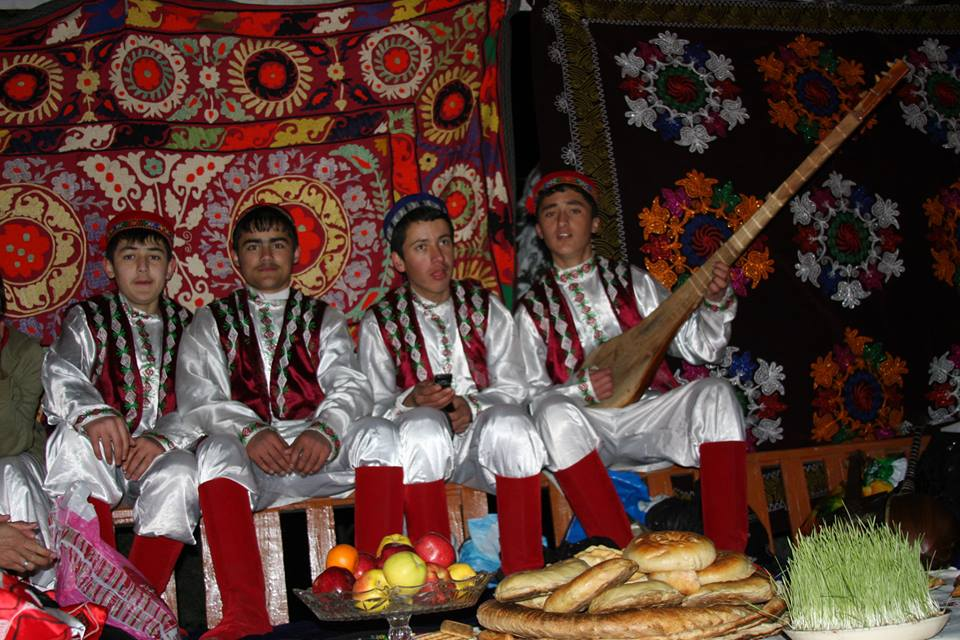

| HOME | HISTORY | PEOPLE | CULTURE | CITIES | GALLERY | AUTHORS |
Tajik is a general designation for a wide range of Persian-speaking people of Iranian origin, with traditional homelands in present-day Tajikistan, Afghanistan and Uzbekistan.
As a self-designation, the term Tajik, which earlier on had been more or less pejorative, has become acceptable only during the last several decades, particularly as a result of Soviet administration in Central Asia. Alternative names for the Tajiks are Farsi (Persian), Farsivan (Persian-speaker), and Dihgan. Not all Tajiks speak a variety of modern Persian. They may speak any one of the extant Iranian languages. For example, the Tajiks of China are actually Pamiris and speak the Eastern Iranic Pamiri languages and are distinct from more western Tajiks.

Most modern Tajiks are speakers of Persian languages and adherents to Islam living in Central Asia. Although historically, some followed Buddhism and Zoroastrianism. The estimated total population of the Tajik people is about 16-20 million. Tajik diaspora occurs in Afghanistan (9,450,000), Tajikistan (6,787,000), Uzbekistan (1,420,000), Pakistan (220,000), China (34,000), Russia (201,000), United States (52,000), Kyrgyzstan (47,500),Canada15,870), and Ukraine (4,255). The name Tajik became popular as a result of the Russian governance in Central Asia. Some other names associated with the Tajiks are Farsi (Persian), Farsiwan (Persian speaker), and Dihgan (farmer). Historically, the Tajiks were agriculturalist once they settled as opposed to previously leading nomadic lives.